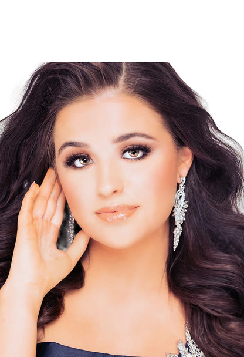
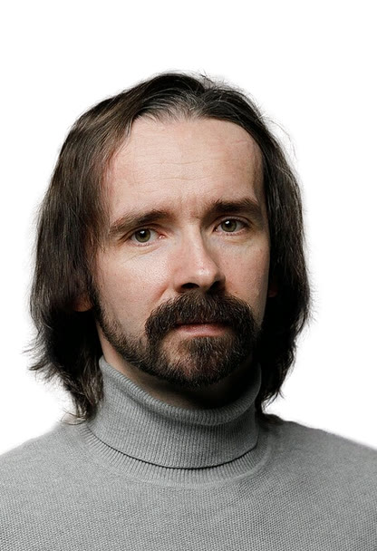
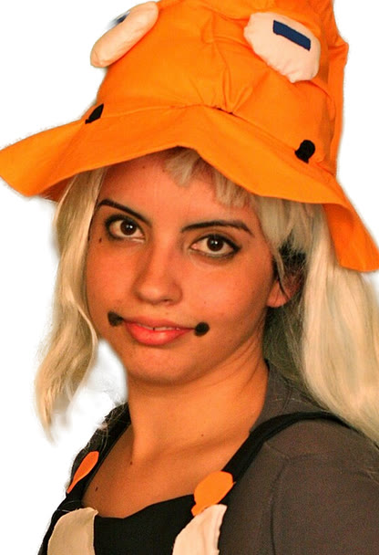
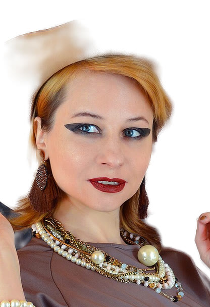
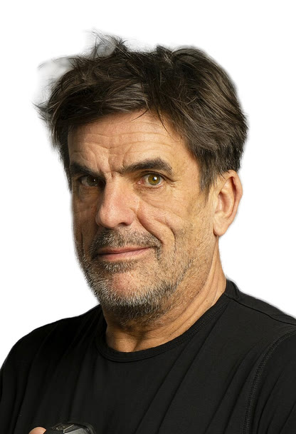

Source images that already show head and shoulders, as the method expects (Wikimedia Commons photographs and paintings, one illustration). Rows: input portrait, frontal rendering, and the same avatar sequence from a moving camera: a full turn around the head, or a sweep across the viewing range the training cameras cover. Videos autoplay muted; Audio unmutes one subject at a time.

Subject 02 · input
Subject 03 · input
Subject 04 · input
Subject 05 · input
Subject 06 · input